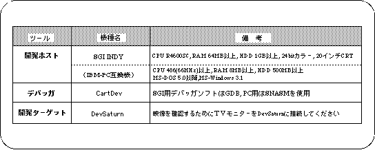
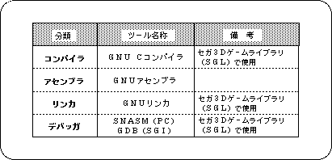
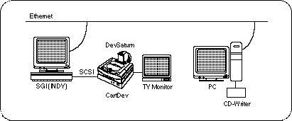

Return to previous page | Return to menu | Go to next page
Indicates recommended system for hardware and software required for development.


Sega recommends the following development environment:
The GNU C language compiler is used as the development language. Using development host , SGI UNIX workstation INDY in network environment , with CartDev in between, Connect to DevSaturn including TV monitor. The configuration diagram is shown below.

In the following, this manual will proceed based on this environment configuration.